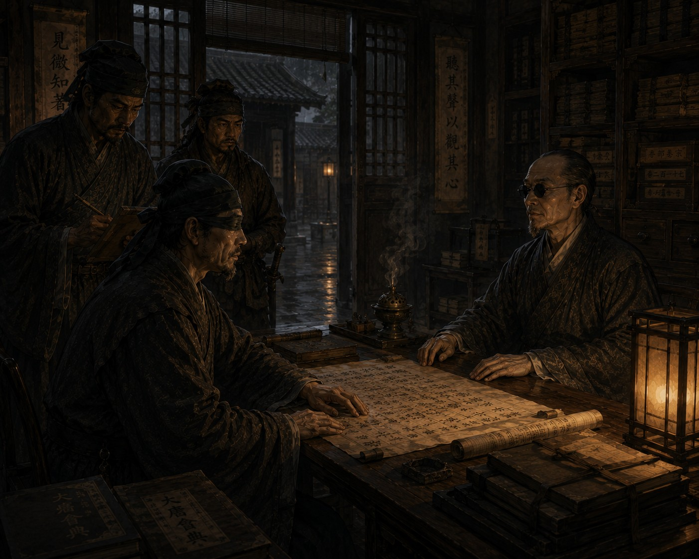

Дело о слепом чиновнике

Осенью Ляньчжоу пах мокрой бумагой, речной водой и старым деревом. Дождь шел уже восьмой день подряд. Он не лил стеной, как южные летние ливни, а медленно и терпеливо оседал на город, наполняя каналы, пропитывая галереи архивных управлений и заставляя чиновников сушить свитки над жаровнями до глубокой ночи.
Я прибыл в архивное управление ближе к полудню. Ло шел справа от меня, тяжело ступая по влажным доскам галереи, а Цзянь двигался чуть позади, как всегда почти бесшумно. Младший чиновник встретил нас у ворот внутреннего двора и всю дорогу до архивного крыла говорил с той виноватой поспешностью, которая появляется у людей, вынужденных отвлекать столичную канцелярию по делу, кажущемуся им одновременно глупым и неприятным.
— Мы надеялись решить все своими силами, — говорил он. — Но писцы начали жаловаться друг на друга, служители отказываются работать в вечернюю смену, а вчера один из младших архивариусов попросил перевести его в налоговое управление. Если слухи дойдут до храмового надзора, начнутся ненужные проверки.
Я слушал не столько слова, сколько его голос. Страха в нем не было. Только раздражение и усталость. Это означало, что дело еще не перешло ту черту, за которой Империя перестает сомневаться и начинает карать.
— Что именно произошло? — спросил я.
Чиновник помедлил.
— Речь идет о слепом архивисте по имени Шэнь Ци. Люди утверждают, будто он способен замечать то, чего замечать не должен.
Ло тихо хмыкнул.
— И что же именно?
— Иногда он поворачивается к человеку прежде, чем тот заговорит. Иногда отвечает на жесты. Несколько дней назад он спросил писца, зачем тот порезал рукав, хотя ткань еще никто не трогал и не описывал. А вчера…
Он снова замолчал.
— Продолжайте.
— Вчера один из служителей поклялся, что Шэнь Ци смотрел прямо на него, пока тот молчал.
Мы вошли в архивное крыло. Здесь воздух был тяжелым от запаха сырости, угольного дыма и старой бумаги. Я всегда любил архивы. Они звучат иначе, чем жилые дома или канцелярии. Бумага приглушает шаги, тканевые перегородки задерживают эхо, а деревянные полки годами впитывают дыхание людей, работавших среди свитков. Даже молчание здесь кажется плотнее.
Комната Шэнь Ци находилась в дальнем конце галереи. Перед дверью чиновник понизил голос:
— Он ведет себя спокойно, господин следователь. Но… иногда рядом с ним становится не по себе.
Он постучал.
Изнутри донесся усталый голос:
— Входите.
Комната оказалась маленькой и теплой. Уголь тихо потрескивал в жаровне, где-то сушилась влажная ткань, а на низком столе лежали развернутые архивные каталоги. Шэнь Ци сидел у огня и перебирал свитки длинными осторожными пальцами.
Я сразу понял, что он действительно слеп. Не по глазам — за годы службы я встречал слепых, чьи лица двигались почти естественно, — а по самому способу присутствия в пространстве. Обычно слепой человек непрерывно слушает мир вокруг себя: дыхание, движение одежды, скрип половиц. Шэнь Ци сидел иначе. Спокойно. Так, словно уже знал расположение комнаты и людей внутри нее.
Когда Ло остановился у двери, архивист слегка повернул голову в его сторону.
— Стражник промок сильнее остальных, — сказал он. — Наверное, вы долго шли вдоль северного канала.
Ло нахмурился. Я услышал, как он переступил с ноги на ногу.
— Вам известно, зачем мы прибыли? — спросил я, опускаясь напротив архивиста.
— Из-за жалоб, — спокойно ответил он. — В последние недели их стало слишком много.
Голос его звучал ровно. Без страха, без оправданий. Это мне не понравилось. Люди, столкнувшиеся с судебным расследованием, обычно начинают оправдываться еще до первого вопроса.
Я некоторое время молчал, прислушиваясь к его дыханию.
— Вам приписывают способность замечать жесты и движения.
— Людям нравится приписывать другим то, чего они сами боятся.
— А вы боитесь?
Шэнь Ци впервые задумался чуть дольше обычного.
— Последнее время — да.
Снаружи шумел дождь. Вода стекала с крыши в каменный желоб, и в коротких паузах между словами я слышал, как где-то в соседних помещениях переворачивают тяжелые свитки.
— Объясните, что именно происходит, — сказал я.
Архивист медленно провел пальцами по краю стола.
— Не знаю, господин следователь. Иногда мне кажется, будто человек оставляет в пространстве не только звук. Словно вокруг него возникает направление.
В этот момент Ло тихо шагнул в сторону.
И Шэнь Ци сразу повернул голову вслед за ним.
Слишком быстро.
Я почувствовал, как младший чиновник задержал дыхание.
Это было первое настоящее нарушение порядка, которое я не смог объяснить сразу.
Следующие три дня я занимался тем, чем занимался всегда: разрушал слухи. Я осматривал комнату архивиста, проверял расположение половиц, слушал движение воздуха, заставлял служителей входить в помещение молча и останавливаться в разных местах. Ночами мы с Ло несколько раз менялись местами в полной тишине, а Шэнь Ци все равно безошибочно определял, где именно мы стоим.
Я искал рациональное объяснение с упрямством человека, прожившего половину жизни среди чужих заблуждений. Мир не любит чудес. Если явление кажется невозможным, значит, причина просто скрыта глубже, чем мы ожидали.
На четвертый день Цзянь принес мне старые архивные свитки. Он раскладывал их возле жаровни один за другим, молча указывая на места, где бумага была когда-то выскоблена ножом. Под пальцами хорошо ощущались старые исправления.
В одном тексте было написано:
«Народ услышал золотое сияние над рекой».
Позднее слово «услышал» заменили на «увидел».
В другом:
«Он внимал лицу государя».
Исправлено:
«Он внимал словам государя».
Я нахмурился.
— Ошибки переписчиков?
Цзянь покачал головой и протянул следующий свиток. Бумага была такой старой, что почти рассыпалась в руках.
Я осторожно коснулся строки.
«Во время речи императора чиновникам запрещалось смотреть на трон».
Некоторое время я сидел неподвижно.
Что-то в этой фразе тревожило меня, хотя я не сразу понял что именно. Потом до меня медленно дошло: сама формулировка предполагала, что человек способен одновременно слушать речь и смотреть.
Как единое действие.
Словно для автора текста это не требовало разделения.
В тот вечер я впервые почувствовал не раздражение, а тревогу.
И причиной был уже не Шэнь Ци.
Причиной были сами архивы.
На пятый день один из младших писцов попытался сжечь часть старых каталогов.
Служители успели остановить его прежде, чем огонь перекинулся на соседние полки. Когда меня позвали, парень сидел на полу внутреннего двора и плакал, судорожно хватая ртом воздух.
— Он знает, где я стою, даже когда я молчу, — повторял писец. — Он смотрит на людей в тишине.
Я допрашивал его почти час, но ничего нового не услышал. Парень был напуган до полубезумия, однако в его голосе не чувствовалось лжи. Только растущий страх человека, столкнувшегося с чем-то, что не помещалось в привычный порядок мира.
Позже, когда служители увели его, Ло тихо сказал:
— Он не врет.
— Я знаю.
— Тогда что происходит?
Я не ответил.
Той ночью я снова пришел к Шэнь Ци. Дождь наконец прекратился, и город впервые за много дней стал тихим. Из каналов тянуло холодной водой, а в дальних кварталах время от времени скрипели лодочные канаты.
Архивист сидел у жаровни.
— Вы хотите понять, как я это делаю, — сказал он, когда я вошел.
— Да.
— А я сам не понимаю.
Некоторое время мы молчали.
— Когда это началось?
— Несколько лет назад. Сначала я просто начал замечать присутствие людей раньше обычного. Потом — направление движения. Иногда мне кажется, будто пространство вокруг человека становится плотнее.
— Из-за архивов?
Шэнь Ци медленно кивнул.
— Я слишком долго работал со старыми текстами.
После этих слов я вдруг понял самое неприятное во всем деле.
Он не пытался произвести впечатление.Не создавал культ.Не выдавал себя за пророка.
Напротив — он был напуган сильнее всех остальных.
В ту ночь мне приснился сон.
Я шел через шумный рынок и впервые ощущал мир как единое целое. Голоса не отделялись от пространства, пространство — от движения, движение — от человеческого присутствия. Мир больше не был разделен на отдельные потоки восприятия.
И именно это вызывало ужас.
Проснувшись, я долго сидел неподвижно в темноте, слушая собственное дыхание.А утром Цзянь принес последний свиток.Очень короткий. Почти уничтоженный временем.
«Человек способен соединять дары внутри сердца,
если долго пребывает среди противоречий».
Ниже шла пометка позднего архивариуса:
«Текст опасен для изучения. Хранить закрытым».
Я свернул свиток и понял, что никакого правильного решения у этого дела нет.
Официальное заключение заняло семь строк.Я писал его спокойно, привычным канцелярским языком:
«Слухи о нарушении природы даров подтверждения не нашли. Архивист Шэнь Ци обладает исключительно развитым слухом, пространственной памятью и многолетним опытом работы в архивных помещениях. Оснований для передачи дела храмовому надзору не имеется».
Ни слова лжи.И ни слова правды.
На следующее утро мы покинули Ляньчжоу. У пристани Цзянь вдруг коснулся моего рукава и вложил мне в ладонь маленький обрывок бумаги. Еще одна архивная запись.Совсем древняя.Я медленно провел пальцами по выцветшим иероглифам.
«Человек был разделен не Небом.
Человек был разделен страхом».
Ветер с канала тронул мокрые рукава одежды. И впервые за многие годы службы я понял, что не способен вынести окончательное суждение.